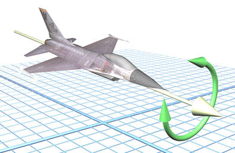

在讨论欧拉角前，我想阐明一个概念：方位（orientation）。方位与方向（direction）不同，可以用向量描述方向，但是不能用一个向量描述一个方位，当将一个向量绕轴自转时，向量不会有任何变化。
然而当一个物体朝向一个特定的方向，让其按照向量一样自转时，物体的方位发生了变化。

描述一个物体的方位时，通常是相对于一个已知方位的旋转描述的，旋转的量称为角位移。所以描述方位等价于描述角位移。
描述方位有三种方式：
本篇文章介绍欧拉角。
欧拉角的基本思想是将角位移分解为绕三个互相垂直轴的三个旋转组成的序列。其实任意三个轴和任意顺序都是可以的，一般使用笛卡尔坐标系的三个轴，并按照一定顺序所组成的旋转序列。这里介绍最常用的 ”heading-pitch-bank" 系统。
最初让物体开始于"标准方位"——物体局部坐标系与世界坐标系的轴重合。然后依次做 heading 旋转，然后做 pitch 旋转，最后做 bank 旋转。
下面依次是原始方位，做 heading-pitch-bank 旋转的示意图。
只要理解其原理即可。
主要的缺点有两个：
这里仅讨论第一个缺点。将一个角度加上 360 度的倍数，显然不会改变方位。另外 pitch 135 度等价于 heading 180 度，pitch 45 度，然后 bank 180 度。
为了保证任意方位都只是独一无二的，必须限制角度的范围。一种技术是将 heading 和 bank 限制在 之间，pitch 限制在 之间。
还有一个著名的问题是万向锁（Gimbal Lock），举个例子，先 heading 再 pitch ，与先 pitch 再 bank 是一样的。原因是一旦选择 为 pitch 角，第一次和第三次旋转的旋转轴就都是竖直轴了，等价于损失了一个自由度，这种现象被称为万向锁。
（完）